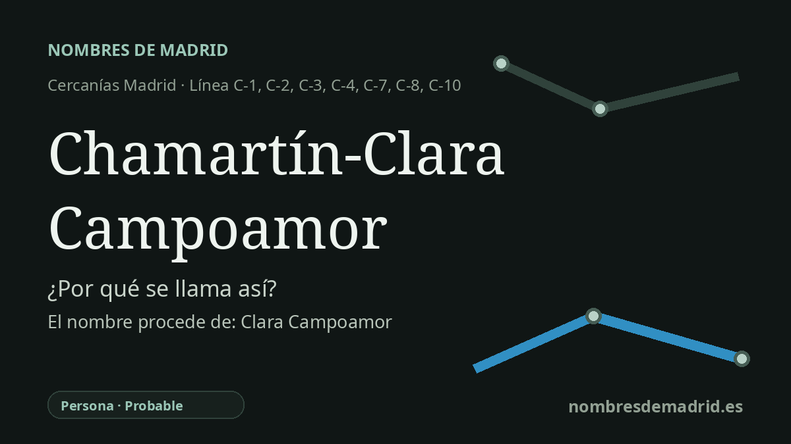

Publicado el · Investigación de Nombres de Madrid · Cómo verificamos cada origen · 6 fuentes consultadas
Respuesta rápida
La estación se llamaba Madrid-Chamartín y en 2020 recibió oficialmente el nombre Madrid-Chamartín-Clara Campoamor en homenaje a Clara Campoamor, abogada y diputada madrileña clave en el sufragio femenino en España. Chamartín conserva el nombre del antiguo municipio de Chamartín de la Rosa, probablemente un topónimo medieval de repoblación formado a partir de nombres personales.
La historia del nombre
El nombre actual de la estación tiene dos orígenes. **Chamartín** procede del distrito del norte de Madrid donde se encuentra el complejo ferroviario, mientras que **Clara Campoamor** se añadió oficialmente para homenajear a la abogada, escritora y diputada que fue la gran defensora pública del sufragio femenino en la Segunda República.
El topónimo más antiguo remite a **Chamartín de la Rosa**, antiguo municipio situado al norte de Madrid. El Ayuntamiento de Madrid explica que aquel término se correspondía aproximadamente con partes de los actuales distritos de Chamartín y Tetuán, y que quedó incorporado definitivamente a Madrid en 1948 tras un decreto de 1947. La estación, inaugurada en 1967 según Renfe, heredó por tanto un nombre de distrito más antiguo que la propia infraestructura ferroviaria.
Para la palabra **Chamartín**, la explicación académica más sólida no es la leyenda tabernaria de “echa, Martín” ni un supuesto “Chez Martin” francés, sino una formación medieval basada en nombres personales. Toponomasticon Hispaniae, en una entrada firmada por E. Nieto Ballester para la familia de nombres Chamartín, interpreta el topónimo como un nombre de repoblación formado por **Echa**, relacionado con el vasco *aita* en antiguo uso antroponímico, más **Martín**, procedente del latino *Martinus*. Esa fuente académica conecta expresamente el patrón con el conocido Chamartín de Madrid, aunque sus ejemplos documentales fechados corresponden al municipio abulense de Chamartín.
La dedicación moderna es mucho más firme. La Orden TMA/1240/2020, publicada en el BOE el 23 de diciembre de 2020, modificó el nombre oficial de **Estación de ferrocarril de Madrid-Chamartín** a **Estación de Madrid-Chamartín-Clara Campoamor**, con efectos jurídicos desde el 24 de diciembre de 2020. La orden relaciona el cambio con la próxima conmemoración de los 90 años del voto femenino en España y describe a Campoamor como promotora y defensora parlamentaria de ese derecho.
Clara Campoamor fue elegida diputada por Madrid en 1931, cuando las mujeres podían ser elegidas pero todavía no podían votar. En las Cortes participó en los trabajos constitucionales que condujeron al artículo 36 y defendió los derechos políticos de las mujeres en los debates decisivos del 30 de septiembre y el 1 de octubre de 1931. En la explicación pública, el nombre puede presentarse como verificado en lo relativo a Campoamor y probable en la etimología antigua de Chamartín: la dedicatoria oficial es segura, mientras que el sentido medieval de Chamartín está bien respaldado por la toponimia académica, pero no por la forma de 1247 como prueba documental específica de Madrid.